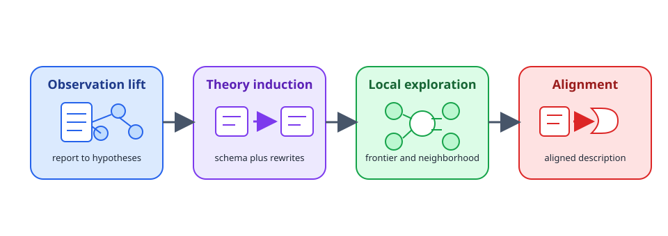
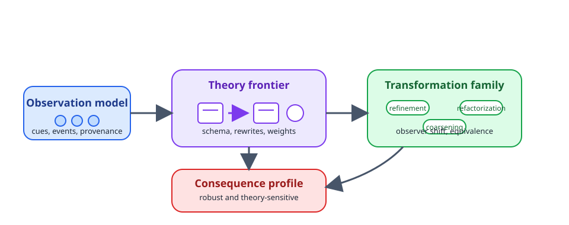
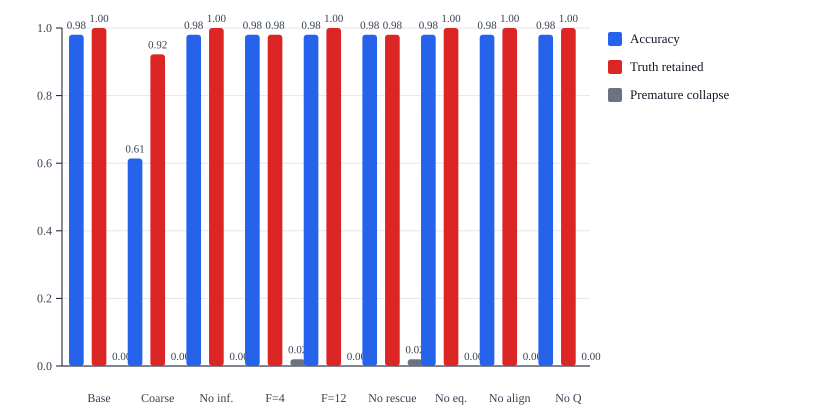
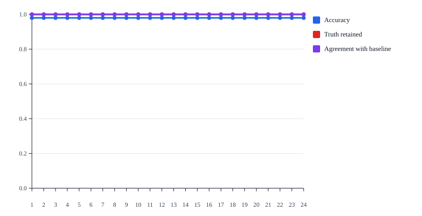
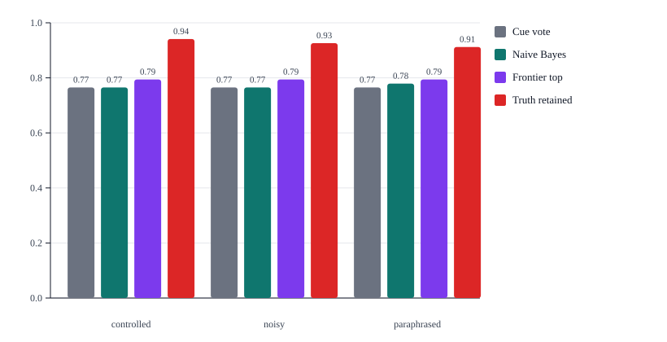
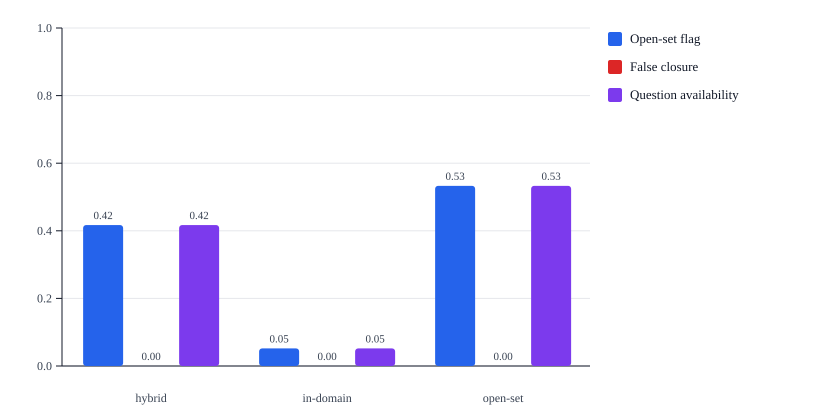
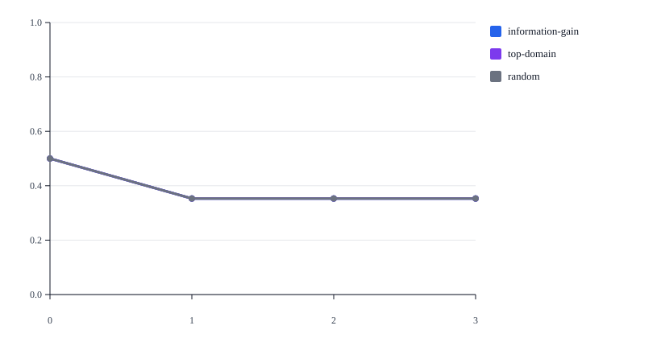
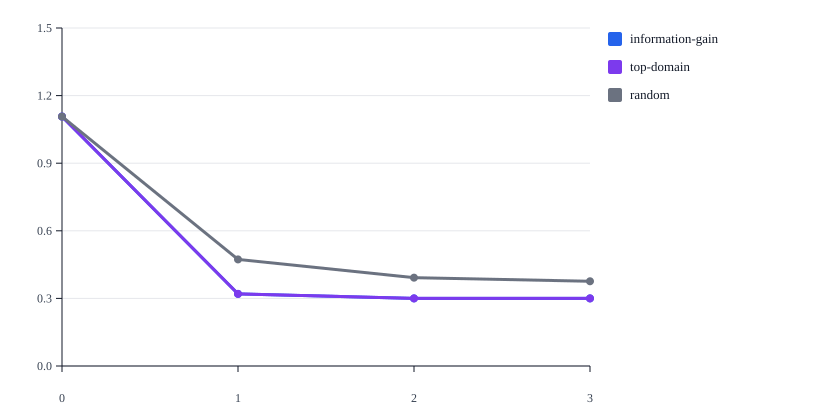

A Meta-Rational Neuro-Symbolic Architecture for Ruliologic Exploration
The article studies how a theory-first neuro-symbolic architecture can move from ambiguous reports to a bounded frontier of local theories without collapsing uncertainty too early. The paper starts from a concrete workflow example in which short administrative text does not yet determine a unique local organization, then develops a four-stage pipeline that separates observational lifting, local theory induction, local rulial exploration, and late conceptual alignment. The current validation ladder contains seven experiments: three structural studies on the original controlled corpus, a sensitivity-and-ablation study, an expanded seven-domain benchmark with lexical variation and external baselines, an open-set novelty study, and a multi-step questioning study. The resulting evidence supports a defensible but bounded claim: retained frontiers improve transfer, uncertainty management, and recoverability on controlled and expanded workflow evidence, while novelty synthesis and adversarial multi-step recovery remain open problems rather than hidden assumptions.
1. Problem, example, and contributions
Consider the short workflow note: "The item was logged, labeled, and the record was updated." That report already suggests structure, but it does not yet determine whether the local organization is package handling, sample handling, manuscript processing, procurement, or another workflow family. A useful system should therefore not jump directly from text to final theory. It should preserve a structured observation, induce several compatible local theories, and retain them long enough for later evidence to justify stronger commitment.
Ruliology studies what abstract rules do and how spaces of possible rules are organized [WOLFRAM-2026].
Applied category theory is presented through concrete real-world examples paired with explicit categorical structures, including databases, circuits, and dynamical systems [FONG-SPIVAK-2019].
Recent neuro-symbolic work argues that learned systems are most useful when they still operate over typed and compositional conceptual carriers [MAO-2025].
The methodological tension is between intensional structure and extensional composition. Engineering practice starts from object-like states with fields, constraints, and admissible operations. Categorical discipline becomes useful only if it constrains how such structured objects compose rather than erasing their interior too early. The paper therefore treats typed local theories as first-class objects and composition as a discipline imposed on their admissible rewrites.
These three ingredients become jointly useful only if one methodological distinction is preserved. A natural-language report is not yet the phenomenon itself, and it is not yet a theory of that phenomenon. A direct passage from text to final theory therefore conflates what was stated, what may have been observed, and what is being inferred. The central problem of the paper is how to move between those levels without erasing structure too early.
The proposed objective is not final-label prediction. The objective is construction of a bounded local region of theory space around the available evidence. The system should first lift text into structured observational hypotheses, then induce several candidate local theories, then organize those theories into a neighborhood with explicit relations of refinement, coarsening, refactorization, and observer-relative equivalence.
This is the operational meaning of meta-rationality in the paper. Meta-rationality is disciplined non-reification. The earliest available abstraction is not treated as final merely because it is available. Several candidates remain active for as long as the evidence, the task, or the budget does not justify stronger commitment. The retained frontier is therefore the operational form of epistemic restraint rather than a vague appeal to pluralism.
The paper makes three distinct contributions. First, it proposes a conceptual architecture that separates report, observation, local theory, neighborhood geometry, and lexicalized explanation. Second, it gives these stages explicit formal objects and update rules. Third, it validates those objects through a seven-experiment ladder that covers structural observer effects, questioning, cue-masking recovery, sensitivity and ablation, broader benchmark transfer, novelty handling, and multi-step questioning.
autoResearchLib is the reference implementation of this proposal, not the proposal itself. The current implementation now supports stronger claims than the earlier three-experiment prototype, but those claims remain bounded. The experiments support frontier contraction under richer observation, question-driven recovery on ambiguous traces, transfer over a broader seven-domain benchmark, and healthier uncertainty on novelty cases. They do not yet support full open-ended theory induction, synthesis of genuinely new domain families, or strong adversarial multi-step recovery. The rest of the article develops that stronger but still measured claim in detail.
2. Neuro-symbolic pipeline and epistemic labor
The pipeline exists to prevent premature collapse. The ambiguous workflow prefix from Chapter 1 should not move directly from text into a final ontology. Instead, it passes through four stages that change both the internal object being manipulated and the kind of epistemic commitment that is justified at that moment.
Figure 1 summarizes the pipeline. The stage labels inside the figure remain intentionally short. Their purpose is orientation. The surrounding prose explains what each stage actually contributes.

Stage 1. Observational lifting
Observational lifting converts a report into several candidate observational hypotheses. This is the natural site of bounded learned assistance because raw text contains ellipsis, lexical variation, underdetermined event structure, and missing local roles. A learned component may therefore help normalize or propose candidate observational fragments, but those fragments must be turned into typed, compositional symbolic concept objects with provenance before they can affect theory induction [MAO-2025].
The output of observational lifting is not a theory. It is a structured candidate account of what may have been observed, what was stated explicitly, and what remains unresolved. That separation is the first safeguard against methodological collapse.
Stage 2. Local theory induction
For each observational hypothesis, the system induces one or more candidate local theories. A local theory proposes a typed state schema, a family of rewrite templates, a set of invariants, and a discipline of admissible composition. This is the stage where the symbolic side of the architecture dominates. Categorical rewriting is treated as typed local transformation rather than as an unstructured state diff, which is why compatibility and composition become first-class concerns [DUVAL-2011].
Stage 3. Local rulial exploration
Theories induced from the same observation are not treated as isolated outputs. They are organized into a local neighborhood through refinement, coarsening, refactorization, and observer shift. The neighborhood separates robust consequences from theory-sensitive consequences and retains a bounded frontier of theories that remain worth tracking. That neighborhood perspective is what makes the framework ruliological in practice: it studies nearby rule-bearing possibilities instead of rushing toward one prematurely reified interpretation [WOLFRAM-2026].
Stage 4. Alignment and lexicalization
Only after a retained neighborhood exists does alignment become appropriate. At that point the system may compare retained theories with external ontologies, prior concept libraries, or domain repertoires. Applied category theory matters here because it shows how concrete application settings such as databases, circuits, and dynamical systems can be organized through explicit categorical structure [FONG-SPIVAK-2019]. The current library uses that discipline only after the symbolic frontier is already explicit.
Table 1 summarizes the epistemic role of the four stages.
| Stage | Input | Output | Why the stage stays separate |
|---|---|---|---|
| Observational lifting | Report text or structured evidence | Several observational hypotheses | It keeps report and theory distinct. |
| Local theory induction | One observational hypothesis | Several candidate local theories | It keeps schemas, rewrites, and invariants explicit. |
| Local rulial exploration | Candidate theories plus observer and question family | Retained neighborhood and frontier | It preserves plural local structure under bounded commitment. |
| Alignment and lexicalization | Retained neighborhood | Aligned conceptual articulation | It delays naming until symbolic structure exists. |
The same staged discipline governs the public usage surface. A host application supplies source evidence, source metadata, an observer profile, and optional policy overrides. The system returns a canonical frontier bundle whose stable projection still distinguishes source context, observations, local theories, transforms, equivalence classes, questions, updates, and consequences. Optional Achilles-backed LLM calls remain configurable through explicit task tags, model tiers, and manual overrides, but they do not override the authoritative symbolic frontier.
3. Formal objects, budgets, and update rules
The framework revolves around four explicit objects. O(x) stores observational hypotheses derived from a report. T(Oi, d) stores a local theory for one observational hypothesis and one domain family. N(O(x)) stores the active mixed neighborhood built from the retained observational family, including nearby theories, typed transforms, equivalence classes, consequence profiles, and question candidates. F stores the active frontier. The point of these objects is practical: every transition from report to retained theory remains inspectable.
An observational hypothesis is already structured rather than rhetorical. It stores normalized source text, explicit and inferred typed cues, a domain-support map, ambiguity notes, and provenance. When segmented evidence is available, explicit cues carry matched segment identifiers and absolute spans; inferred cues carry the rule identifier that justified them. The same state is exposed through a canonical CNL projection, so the library surface, the experiment outputs, and the article all refer to the same operational objects rather than to separate descriptive layers.
Three budget objects control how much structure is retained at each stage. B_lift governs which focused hypotheses survive observational lifting. B_frontier governs how many theories remain on the retained frontier after non-domination and rescue. B_query governs how many questioning steps the caller is willing to spend after the initial frontier has been built. Keeping these budgets distinct matters because early observational plurality, retained theory plurality, and question-driven revision are different epistemic acts.
For each retained hypothesis and each active domain family, the system induces a local theory with six named score dimensions: evidenceCoverage, predictiveAdequacy, compressionUtility, compositionalSharpness, stability, and alignmentUtility. The weighted scalar total used for ranking is 0.22 * evidenceCoverage + 0.28 * predictiveAdequacy + 0.10 * compressionUtility + 0.16 * compositionalSharpness + 0.14 * stability + 0.10 * alignmentUtility. The total matters for ranking and entropy summaries, but it does not replace the named dimensions because several retained theories can remain useful for different reasons.
Table 2 summarizes the operational meaning of the score dimensions.
| Score dimension | Meaning in the current implementation | Weight |
|---|---|---|
evidenceCoverage | Fraction of the observational signal explained by the theory | 0.22 |
predictiveAdequacy | Compatibility with the matched local state evolution | 0.28 |
compressionUtility | Structured summary value without gratuitous local complexity | 0.10 |
compositionalSharpness | Clarity of typed rewrites and admissible compositions | 0.16 |
stability | Resistance to perturbation and later updates | 0.14 |
alignmentUtility | Utility for later conceptual articulation and comparison | 0.10 |
Figure 2 depicts the neighborhood in abstract form. The important point is that the neighborhood contains more than a list of candidate theories. It also contains the transform family Mi, the observer-relative equivalence classes Ei, the consequence profile Qi, and the active question family over the current frontier. In the current implementation the retained neighborhood may mix theories from several observational hypotheses, but every theory still preserves its hypothesisId, so the mixed frontier remains auditable rather than anonymous. Typed local transformation and compatibility therefore remain explicit as part of a categorical rewriting view rather than being hidden in a monolithic score [DUVAL-2011].

The frontier is summarized with entropy over the retained domain distribution, H(F) = - sum_d p(d) log p(d), where p(d) is the normalized retained-domain mass [SHANNON-1948]. Discriminating questions are then selected by expected information gain, IG(q) = H(F) - sum_a P(a | q) H(F | a), which is the reduction in frontier uncertainty expected from asking question q [SETTLES-2009]. The important detail is that both entropy and information gain are computed over retained domain mass, not over the raw count of theory variants, and the public CNL surface now records the per-domain answer map together with the answer partitions induced by the current frontier. The practical frontier is also widened by one rescue rule: if an entire domain disappears from the strict frontier but its best theory remains within rescue tolerance tau_rescue = 0.08 of the best strict-frontier score, that theory is reintroduced. Rescue is therefore the operational safeguard against premature elimination of a still-plausible local family.
Alignment has one precise role in the current implementation. It is a score dimension that estimates how useful a retained theory would be for later conceptual articulation or comparison against an external repertoire. It is not a hidden ontology matcher and it is not a late-stage LLM rewrite of the symbolic result. When alignment is disabled, that utility contribution is zeroed out of ranking rather than merely hidden from the later lexical layer; the canonical frontier object remains intact.
The worked example from Chapter 1 now becomes operational. After the prefix "The item was logged, labeled, and the record was updated," the rich observer sees generic workflow signal but no decisive package, sample, manuscript, procurement, maintenance, incident, or compliance cue. The retained frontier therefore keeps several domain families alive even if one of them is currently ranked first. That is the intended behavior. The system is recording structured uncertainty rather than pretending the case is already resolved.
If the best next question asks for dispatch evidence and the observed answer is "no," the update does not restart the analysis from scratch. It applies a local frontier revision. Package-oriented theories lose predictive adequacy and stability, the frontier contracts, and the surviving neighborhood becomes smaller and sharper. The value of the question is therefore not only a better answer. It is an explicit record of which retained possibilities were ruled out and why.
The same logic is visible in the three core algorithms.
OBSERVATIONAL_LIFT(x, B_lift)
1. Normalize the report and extract explicit typed cues.
2. Infer additional bounded cues through local completion rules.
3. Compute domain support values.
4. Build the base hypothesis with full provenance.
5. Build focused hypotheses that remain within the lift budget.
6. Return O(x).LOCAL_RULIAL_EXPLORATION(O, Q, B_frontier)
1. Induce one base theory for each active domain family.
2. Generate nearby variants by refinement, coarsening, and refactorization.
3. Score theories on the six named dimensions.
4. Build equivalence classes and consequence profiles.
5. Retain the frontier through non-domination plus rescue.
6. Return N(Oi) and F.RULIAL_NEIGHBORHOOD_UPDATE(N_t, DeltaE, Q, B_query)
1. Choose the highest-information-gain question when a question is available.
2. Apply answer-dependent score deltas to retained theories.
3. Recompute the frontier under non-domination and rescue.
4. Rebuild equivalence classes and consequence profiles.
5. Refresh entropies and return N_t+1.The frontier is therefore not only a data structure. It is the operational form of epistemic restraint inside the framework. It records why several explanations survive, why some collapse, and how later evidence changes that balance without hiding the transition.
4. Validation ladder and empirical results
The paper now validates a ladder of claims rather than one undifferentiated promise. The early experiments still test the structural core of the framework: richer observation, question-driven frontier contraction, and recoverability under cue masking. The newer experiments then test robustness to policy variation, transfer across a larger benchmark, healthy uncertainty under novelty, and multi-step recoverability under different questioning conditions. This matters because the architecture is broader than the current implementation, and the article should not imply that one experiment settles every aspect of the proposal.
The empirical program now has three dataset layers. The first is the original eighteen-case controlled corpus across package, sample, and manuscript workflows. The second is an expanded seven-domain benchmark with controlled, paraphrased, and noisy strata, yielding 102 benchmark cases and 204 evaluated test traces over four segment depths. The third is a novelty layer with 14 unseen and hybrid base cases evaluated against the same deterministic core. Multi-step questioning then reuses the paraphrased and noisy benchmark slices to test budgeted recovery over time.
Table 3 summarizes the seven experiments and their role in the validation ladder.
| Experiment | Role | Trace count | Main signal |
|---|---|---|---|
| Experiment 1 | Observer richness | 18 cases × 4 prefixes × 2 observers | Rich observers contract the frontier earlier. |
| Experiment 2 | Single-step questioning | 26 ambiguous traces | One discriminating question lowers entropy and improves ranking. |
| Experiment 3 | Cue masking and recovery | 72 traces | Retained frontiers preserve recoverability under masked cues. |
| Experiment 4 | Sensitivity and ablation | 153 traces | Nearby policy choices preserve conclusions; coarse observation and rescue removal matter. |
| Experiment 5 | Expanded benchmark transfer | 204 traces | Frontier retention transfers across seven domains and three lexical strata. |
| Experiment 6 | Open-set novelty | 195 traces | Novelty increases uncertainty and question demand more than in-domain traces. |
| Experiment 7 | Multi-step questioning | 2448 traces | Clean and noisy recovery improve with budget; adversarial answers remain hard. |
Experiments 1 through 3 still provide the structural foundation. On Prefix 2 traces, the rich observer raises mean top-domain accuracy above the coarse observer while lowering frontier entropy. Single-step questioning then lowers entropy further on the retained ambiguous subset. Under cue masking, the lexical and single-theory baselines collapse early, but the retained frontier still preserves enough structure for one question to recover a substantially better answer. Those three studies establish that the retained frontier is not decorative. It changes what can still be recovered later.
Experiment 4. Sensitivity analysis and structural ablations
Experiment 4 answers the most immediate skepticism about the symbolic core: do the results depend on one narrow set of constants or on one hidden structural shortcut? The baseline policy is evaluated against ablations that weaken observer richness, inferred cues, domain rescue, equivalence compression, alignment utility, or discriminating questions, and against a sampled neighborhood of nearby policy settings.
Table 4 shows the ablation results. The baseline keeps top accuracy at 0.98 with truth retention at 1. Coarse observation is the strongest degrading ablation: accuracy falls to 0.614 and entropy rises to 0.854. Removing domain rescue keeps top accuracy almost unchanged but lowers truth retention to 0.98 and introduces a non-zero premature-collapse rate.
| Condition | Accuracy | Truth retained | Entropy | Premature collapse | Agreement |
|---|---|---|---|---|---|
| Baseline policy | 0.98 | 1 | 0.073 | 0 | 1 |
| Coarse observer | 0.614 | 0.922 | 0.854 | 0 | 0.634 |
| No inferred cues | 0.98 | 1 | 0.103 | 0 | 1 |
| Frontier limit 4 | 0.98 | 0.98 | 0.031 | 0.02 | 1 |
| Frontier limit 12 | 0.98 | 1 | 0.073 | 0 | 1 |
| No domain rescue | 0.98 | 0.98 | 0 | 0.02 | 1 |
| No equivalence classes | 0.98 | 1 | 0.073 | 0 | 1 |
| No alignment utility | 0.98 | 1 | 0.073 | 0 | 1 |
| No discriminating questions | 0.98 | 1 | 0.073 | 0 | 1 |
Figure 9 shows the structural ablation profile directly, and Figure 10 shows the sampled policy region. Across the sampled neighborhood, top accuracy never drops below 0.98 and agreement with the baseline remains at 1. The result is not that every component is equally important. The result is that the framework is stable across a broad local region while still revealing which structural pieces carry most of the epistemic load.


Experiment 5. Expanded benchmark transfer
Experiment 5 broadens the corpus from the original controlled set to a seven-domain benchmark with controlled, paraphrased, and noisy strata. It compares the frontier against cue-vote lexical classification, multinomial naive Bayes, and single-best-theory ranking. Calibration is also reported through expected calibration error to track how confidence matches empirical accuracy [GUO-2017].
Table 5 shows the stratum-level summary. Across all three strata, frontier-top accuracy stays at 0.794 or above, while truth retention remains even higher: 0.941 for controlled wording, 0.912 for paraphrased wording, and 0.926 for noisy wording. The gap between frontier-top accuracy and truth retention is precisely the point: the retained frontier continues to preserve the correct family more often than the immediate top-ranked answer reveals.
| Stratum | Traces | Cue vote | Naive Bayes | Single theory | Frontier top | Truth retained | Frontier ECE |
|---|---|---|---|---|---|---|---|
| controlled | 68 | 0.765 | 0.765 | 0.794 | 0.794 | 0.941 | 0.079 |
| noisy | 68 | 0.765 | 0.765 | 0.794 | 0.794 | 0.926 | 0.073 |
| paraphrased | 68 | 0.765 | 0.779 | 0.794 | 0.794 | 0.912 | 0.067 |
The benchmark is now instrumented strongly enough to show where transfer is still uneven. Table 5b reports per-domain frontier precision, recall, F1, and mean truth rank. The weakest families remain the ones whose local cues overlap most with adjacent workflow structures, but even there the retained truth rank stays well below full collapse because the correct family usually survives somewhere on the frontier.
| Domain | Support | Precision | Recall | F1 | Mean truth rank |
|---|---|---|---|---|---|
| compliance | 24 | 1 | 0.75 | 0.857 | 1.545 |
| incident | 24 | 1 | 0.75 | 0.857 | 1.87 |
| maintenance | 24 | 1 | 0.75 | 0.857 | 1 |
| manuscript | 36 | 0.78 | 0.889 | 0.831 | 1.111 |
| package | 36 | 0.507 | 0.944 | 0.66 | 1.056 |
| procurement | 24 | 1 | 0.75 | 0.857 | 1 |
| sample | 36 | 1 | 0.667 | 0.8 | 1.667 |
Figure 11 compares the main policies across the three strata. The benchmark also shows the expected segment-depth story: at Segment 1 the frontier still preserves truth better than it ranks it, while later stages let both ranking and retention approach full resolution. This is a stronger empirical basis than the original eighteen-case corpus because the benchmark now includes broader lexical variation, more workflow families, explicit external baselines, and domain-level error diagnostics.

Experiment 6. Open-set novelty and false-closure control
Experiment 6 asks a narrower question than full theory induction: when the trace is genuinely unseen or hybrid, does the frontier behave like a healthy open-set uncertainty mechanism rather than a forced closed-set commitment [SCHEIRER-2013]? The current novelty layer does not synthesize a brand-new theory family. It measures whether novelty increases uncertainty, frontier width, and question demand without producing the same warning profile on ordinary in-domain traces, and it now does so on a broader novelty set that spans clinical, legal, quality, logistics, hiring, and explicit hybrid traces.
Table 6 shows the result. In-domain traces are flagged as open-set candidates only 0.052 of the time, while open-set traces are flagged at 0.533 and hybrid traces at 0.417. Mean entropy rises from 0.073 in-domain to 0.847 on open-set traces. This is the right direction for a commitment-control mechanism.
| Condition | Traces | Open-set flag | False closure | Questions | Entropy |
|---|---|---|---|---|---|
| hybrid | 12 | 0.417 | 0 | 0.417 | 0.527 |
| in-domain | 153 | 0.052 | 0 | 0.052 | 0.073 |
| open-set | 30 | 0.533 | 0 | 0.533 | 0.847 |
Figure 12 shows the same comparison graphically. The strongest novelty response appears at earlier prefixes, where the framework retains wider frontiers and more question demand. Later prefixes can still collapse incorrectly on some unseen cases, which is why the article should describe this as healthy uncertainty management rather than as proof of new local-theory synthesis.

Experiment 7. Multi-step questioning budgets
Experiment 7 extends the single-step questioning result into an explicit budgeted protocol. The benchmark traces are evaluated under budgets of 0, 1, 2, and 3 answered questions and under three question policies: information gain, a cheaper top-domain heuristic, and a random policy. The study contrasts clean evidence, masked evidence with noisy answers, and masked evidence with adversarial answers. The adversarial condition is fixed as a worst-branch policy that chooses the answer most likely to damage correctness and truth retention.
Table 7 shows the noisy condition, where the comparison is most useful. Under masked noisy evidence, the information-gain policy raises final accuracy from 0.5 at budget 0 to 0.691 at budget 2, while the random policy reaches only 0.588 at the same budget. Clean evidence reaches full recovery quickly, which confirms that the multi-step protocol is not merely adding redundant queries.
| Policy | Budget | Accuracy | Truth retained | Entropy | Rescued |
|---|---|---|---|---|---|
| information-gain | 0 | 0.5 | 0.897 | 1.107 | 0 |
| information-gain | 1 | 0.647 | 0.838 | 0.628 | 0.294 |
| information-gain | 2 | 0.691 | 0.824 | 0.534 | 0.382 |
| information-gain | 3 | 0.691 | 0.809 | 0.427 | 0.382 |
| random | 0 | 0.5 | 0.897 | 1.107 | 0 |
| random | 1 | 0.618 | 0.779 | 0.61 | 0.265 |
| random | 2 | 0.588 | 0.706 | 0.498 | 0.235 |
| random | 3 | 0.574 | 0.706 | 0.356 | 0.206 |
| top-domain | 0 | 0.5 | 0.897 | 1.107 | 0 |
| top-domain | 1 | 0.574 | 0.676 | 0.452 | 0.235 |
| top-domain | 2 | 0.603 | 0.676 | 0.408 | 0.294 |
| top-domain | 3 | 0.603 | 0.706 | 0.343 | 0.294 |
Figure 13 shows accuracy versus budget under the hardest adversarial condition, and Figure 14 shows the corresponding entropy curve. The important negative result is visible as well as the positive one: under adversarial answers, all policies degrade sharply after budget 0. Information gain still drives entropy lower than the random policy, but it does not recover accuracy in the same way it does under clean or noisy answers. At budget 2, the information-gain policy still delivers mean information gain 0.634 and mean entropy reduction per question 0.747, yet its harmful-question rate rises to 0.574. This is a real current limitation of the implementation, not a rhetorical footnote.


Taken together, the seven experiments support a stronger and more defensible claim than the earlier three-experiment article draft. The current implementation now supports structural validity, local robustness, broader benchmark transfer, healthier uncertainty on novelty cases, and meaningful question-budget effects under clean and noisy evidence. It still does not support full open-ended theory induction, synthesis of new domain families, or robust adversarial multi-step recovery. The optional auditability study defined elsewhere remains future work rather than current evidence, and it should remain described that way.
5. Interpretation, limits, and next studies
The framework is meta-rational in a substantive sense because it gives operational form to epistemic restraint. The retained frontier is not an implementation convenience for delaying a decision. It is the explicit record that several structured explanatory candidates remain plausible and useful at once. That record matters whenever evidence is finite, observer access is partial, and several local organizations of the same behavior remain defensible.
The seven-experiment ladder now supports a stronger but still bounded claim than the earlier draft of the work. Richer observers sharpen the frontier earlier than coarse observers. Explicit questions contract that frontier further and improve recovery on ambiguous traces. Retained frontiers remain useful under cue masking, remain robust across a nearby policy region, transfer across a broader seven-domain benchmark, and trigger more uncertainty on novelty cases than on ordinary in-domain traces. Budgeted questioning also shows meaningful recovery under clean and noisy evidence.
Those strengths do not erase the current limits. The implementation does not yet demonstrate full open-ended theory induction. The novelty study measures healthy uncertainty management rather than synthesis of genuinely new local theory families. The multi-step questioning study also shows a real weakness: adversarial answers can overwhelm the current information-gain policy even when that policy still reduces entropy more efficiently than random questioning. These limits should be treated as current engineering and scientific constraints, not as temporary wording problems.
This still leaves the framework useful for a wide range of practical settings. Workflow mining, protocol analysis, scientific traces, compliance intelligence, and agent memory all benefit from preserving several structured local theories, their transforms, and their robust versus theory-sensitive consequences. Good use of the framework therefore follows a simple discipline: preserve source structure, keep the retained frontier plural but bounded, and treat discriminating questions as normal update actions rather than as emergency prompts.
Optional learned assistance remains bounded to two tasks: normalization before observational lifting and conceptual articulation after the symbolic frontier already exists. Those auxiliary paths are valuable because raw input and human-facing explanation both benefit from flexible language handling. They remain bounded because the authoritative outputs of the system are still the symbolic frontier, the named score profile, the update trace, and the canonical CNL projection.
The optional auditability study is the right next human-facing experiment, but it is not part of the current empirical claim. Its role is to test whether retained-frontier reports are actually easier for technical readers to justify, inspect, and revise than forced single-theory reports. Until evaluator data exists, that study should remain future work rather than implied evidence.
Ruliology contributes the orientation toward spaces of possible rules and the consequences they generate [WOLFRAM-2026].
Applied category theory contributes a way to keep concrete application settings such as databases, circuits, and dynamical systems tied to explicit categorical structure [FONG-SPIVAK-2019].
Categorical abstract rewriting contributes a precise language for typed local transformations and their compatibility [DUVAL-2011].
Neuro-symbolic concept work contributes the insistence that learned components should still operate over typed and compositional conceptual structures [MAO-2025].
autoResearchLib is the current reference implementation of this proposal. Its value is not that it finishes the research program. Its value is that it makes the current frontier discipline executable, reproducible, and inspectable enough for the next round of theory and experiment to be argued from evidence rather than from aspiration.
References
- [WOLFRAM-2026] Stephen Wolfram. What Is Ruliology?. 2026. https://writings.stephenwolfram.com/2026/01/what-is-ruliology/.
- [FONG-SPIVAK-2019] Brendan Fong and David I. Spivak. Seven Sketches in Compositionality: An Invitation to Applied Category Theory. 2019. https://arxiv.org/abs/1803.05316.
- [MAO-2025] Jiayuan Mao, Joshua B. Tenenbaum, and Jiajun Wu. Neuro-Symbolic Concepts. 2025. https://arxiv.org/abs/2505.06191.
- [DUVAL-2011] Dominique Duval, Rachid Echahed, and Frederic Prost. Categorical Abstract Rewriting Systems and Functoriality of Graph Transformation. 2011. https://arxiv.org/abs/1101.3417.
- [SHANNON-1948] Claude E. Shannon. A Mathematical Theory of Communication. 1948. https://people.math.harvard.edu/~ctm/home/text/others/shannon/entropy/entropy.pdf.
- [SETTLES-2009] Burr Settles. Active Learning Literature Survey. 2009. https://minds.wisconsin.edu/handle/1793/60660.
- [GUO-2017] Chuan Guo, Geoff Pleiss, Yu Sun, and Kilian Q. Weinberger. On Calibration of Modern Neural Networks. 2017. https://arxiv.org/abs/1706.04599.
- [SCHEIRER-2013] Walter J. Scheirer, Anderson Rocha, Archana Sapkota, and Terrance E. Boult. Toward Open Set Recognition. 2013. https://ieeexplore.ieee.org/document/6480851.